|
|
| hard corals text index | photo index |
| Phylum Cnidaria > Class Anthozoa > Subclass Zoantharia/Hexacorallia > Order Scleractinia > Family Merulinidae |
| Ridged
plate coral Merulina sp.* Family Merulinidae updated Nov 2019 Where seen? This plate-like coral with radiating ridges is sometimes seen on some of our Southern shores. Features: Colony 10-15cm, encrusting plates or fans, sometimes with knobbly fingers sticking out of the plates. There are thick, short ridges that form meandering valleys, radiating from the centre perpendicular to the edges. The valleys are short and straight, spreading like a fan from the centre and sometimes dividing into several valleys. The polyp mouths are in the valleys. It has few, long tentacles which are rarely seen. Colour seen include brown, blue and green with polyp mouths the same colour or blue. There are two species of ridged corals recorded for Singapore: Merulina scabricula and M. ampliata are similar in appearance. M. scabricula has finer skeleton structures. |
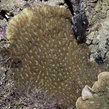 Raffles Lighthouse, Jul 06 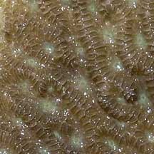 Thick short ridges forming valleys. |
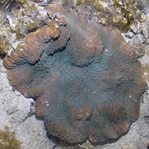 Pulau Semakau, Aug 11 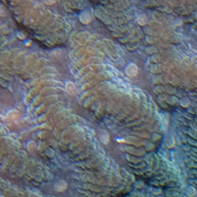 Polyp mouths in the valleys. |
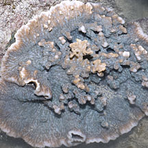 Sisters Island, May 12 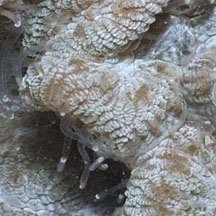 Tentacles rarely seen |
*Species are difficult to positively identify without close examination.
On this website, they are grouped by external features for convenience of display.
| Ridged plate corals on Singapore shores |
On wildsingapore
flickr
|
| Other sightings on Singapore shores |
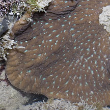 Sisters Island, May 12 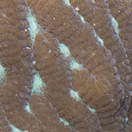 |
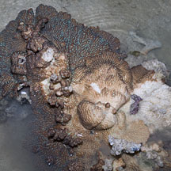 Pulau Semakau, Oct 11 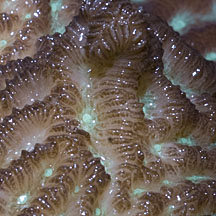 |
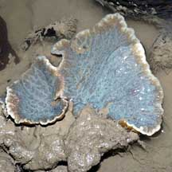 Kusu Island, Aug 04 |
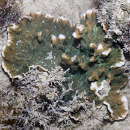 Sisters Island,Jan 12 |
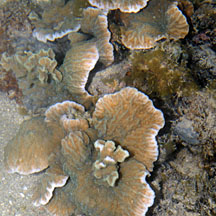 Pulau Hantu, Apr 09 |
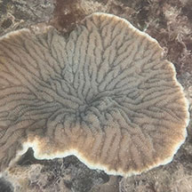 Terumbu Bemban, Aug 25 Photo shared by Lon Voon Ong on facebook. |
| Merulina
species recorded for Singapore from Danwei Huang, Karenne P. P. Tun, L. M Chou and Peter A. Todd. 30 Dec 2009. An inventory of zooxanthellate sclerectinian corals in Singapore including 33 new records **the species found on many shores in Danwei's paper. in red are those listed as threatened on the IUCN global list.
|
|
Links
|